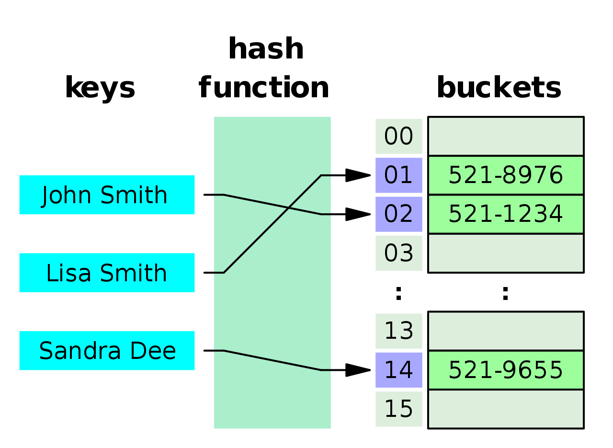

| |
Data Structures
From Wikipedia, the free encyclopedia
For other uses, see Data structure (disambiguation).
Not to be confused with data type.
For information on Wikipedia's data structure, see Wikipedia:Administration § Data structure and development.
| Main page |
| contents |
| Current events |
| Random articles |
| Contact us |
| Contribute |
| Help |
| Learn to edit |
| Community portal |
| Recent changes |
| Upload file |
| Tools |
| What links here |
| Related changes |
| Community portal |
| Special pages |
| Page information |
|
In computer science, a data structure is a data organization, management, and storage format that enables efficient access and modification.[1][2][3] More precisely, a data structure is a collection of data values, the relationships among them, and the functions or operations that can be applied to the data.[4]
usageData structures serve as the basis for abstract data types (ADT). The ADT defines the logical form of the data type. The data structure implements the physical form of the data type.[5] Different types of data structures are suited to different kinds of applications, and some are highly specialized to specific tasks. For example, relational databases commonly use B-tree indexes for data retrieval,[6] while compiler implementations usually use hash tables to look up identifiers.[7] Data structures provide a means to manage large amounts of data efficiently for uses such as large databases and internet indexing services. Usually, efficient data structures are key to designing efficient algorithms. Some formal design methods and programming languages emphasize data structures, rather than algorithms, as the key organizing factor in software design. Data structures can be used to organize the storage and retrieval of information stored in both main memory and secondary memory.[8] |
 |